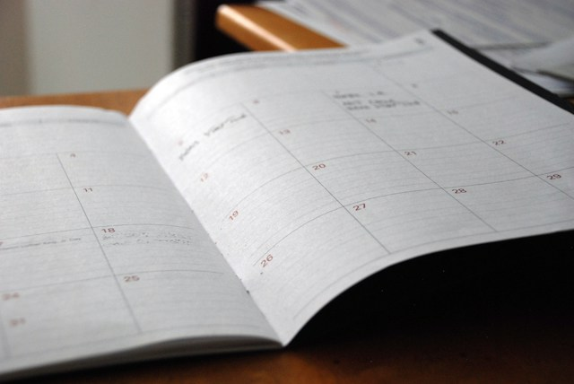

<div class="about-container">
  <div class="row justify-content-center mt-5">
    <div class="col-lg-10 col-md-8 col-sm-7">
      <div class="card shadow">
        <div class="card-title text-center">
          <h1>About Us</h1>
        </div>

        <div class="card-body row">
          <div class="col-lg-7 justify-content-center text">
            <p>It's a simple fact of life that there are only so many hours in the day and only so many tasks you can get done within that time. If you want your business
              to thrive, every member of every team needs to be able to efficiently manage their workflow, don't waste time juggling a messy ToDo list
               of things you may or may not have done already. It's easier to stay organized when you're monitoring what tasks you have done already and what tasks
               still needs to done, and here at Nodebucket, we'll keep track of that for you so you can focus on making your business the best it can be.
            </p>
            <p>Our company was founded on the principles of efficiency, simplicity, and skillful organization. Our founder, Noland Bucket, saw how
              many businesses, from small start-ups to large corporations, were impeded by individual employees lacking a complete vision of what tasks they needed to
               complete at any given time. That's why at Nodebucket, we value how you use your time, and most importantly, we value the time you spend figuring
               out how to use your limited time.
            </p>
            <p>For that reason, we offer a quick and intuitive solution for keeping track of what tasks you've finished and what tasks you
              haven't, one available so that each member of your organization can manage and maintain their own ToDo and Done lists, free of clutter listing
              responsibilities that aren't theirs. That way, everyone can more easily stay on track, leading to a smoother and more efficient day-to-day process.</p>
          </div>
          <div class="col-lg-4 col-sm-9 col-md-9 mx-auto">
            <div class="row"></div><br>
            <div class="row"></div>
            <p class="source">Photos from <a href="https://unsplash.com/photos/white-printer-paperr-FoKO4DpXamQ">Eric Rothermel</a> and <a href="https://unsplash.com/photos/a-person-drawing-a-diagram-on-a-piece-of-paper-lFtttcsx5Vk">Kelly Sikkema</a> on Unsplash</p>
          </div>
        </div>
      </div>
    </div>
  </div>
</div>